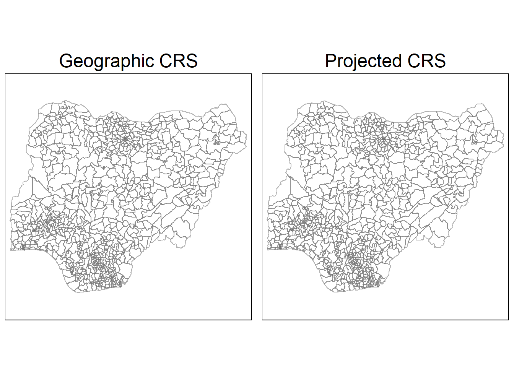
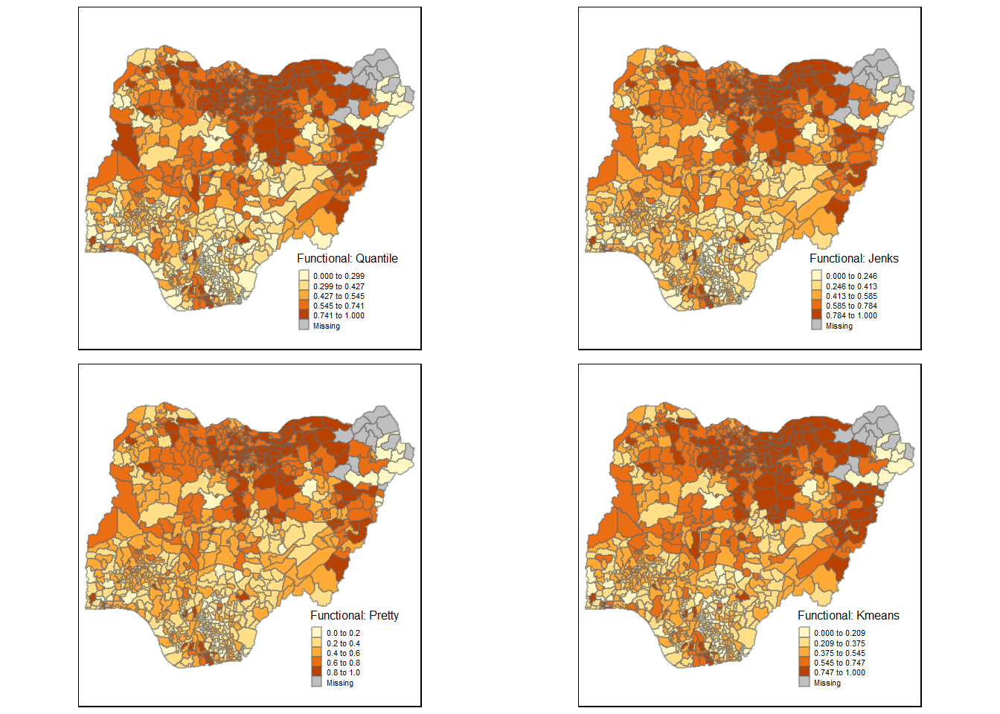
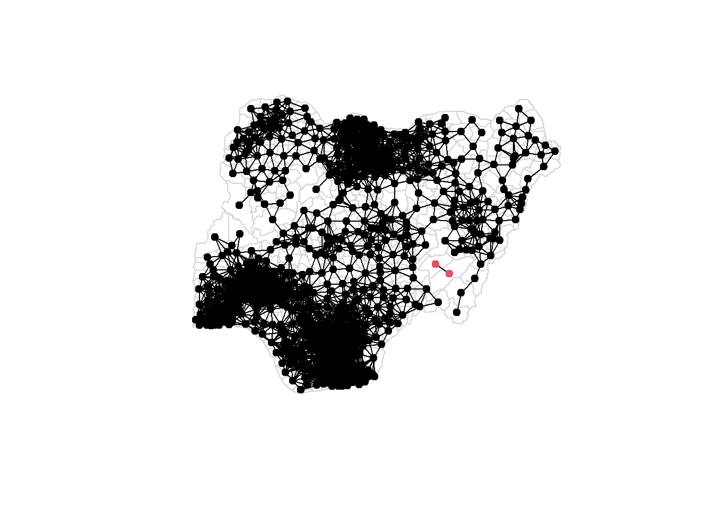
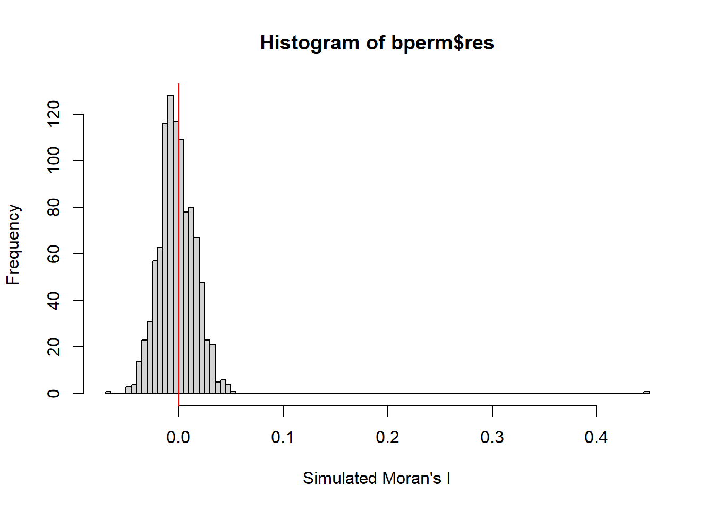
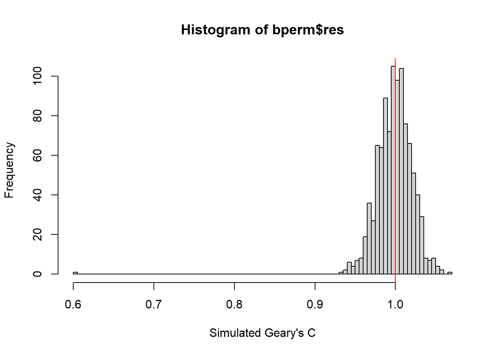
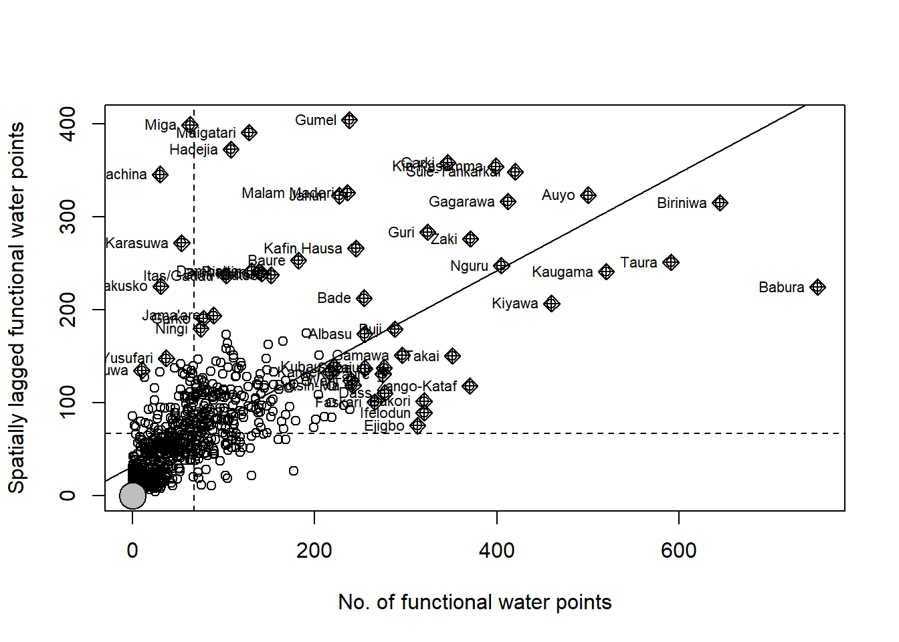

pacman::p_load(sf, tidyverse, tmap, spdep, funModeling)Take-home Exercise 1
1. Introduction
Water is a scarce resource. With increasing pollution from various commercial activities, it becomes ever so difficult to obtain potable water for drinking, agriculture, sanitation and manufacturing. Particularly in developing countries, the lack of water sanitation has created major issues such as high rate of illness and mortality due to infection and malnutrition.
The United Nations (UN) estimate that 1.6 billion or close to 20% of people will lack safely managed drinking water in 2030 (UN, 2022). In Nigeria, an estimated 70% of water at the point of consumption is contaminated, which is a direct cause of Nigeria having the world’s largest number of deaths from waterborne diseases among children under five years old (VOA, 2022).
Hence, ensuring the availability and sustainable management of water and sanitation for all remains one of the 17 Sustainable Development Goals (SDGs) of the UN.

2. Problem Statement and Objective
In this study, we aim to perform geospatial analytics to reveal the spatial patterns, including the distribution and autocorrelation, of water points in Nigeria which are non-functional. This will be done using geospatial data on Level-2 Administrative Boundaries and water-points of Nigeria. The results of the analysis is a starting point to help inform policy decisions on the potential placement and maintenance of water points for more effective delivery of potable water to the people of Nigeria
3. Data Pre-Preparation
3.1. Water Point Data
We obtained the global water point and small water scheme level data from Water Point Data Exchange (WPdx) Global Data Repositories (WPdx, 2020). We accessed the WPdx-Plus (WPdx+) option and downloaded the full Shapefile under the Export option, as shown in the screenshot below. As the data consists of water points around the world, we will later filter for water points within Nigeria in R in a subsequent step.
After downloading the Shapefile which can take a few minutes due to the large file size, unzip the folder and copy the Shapefiles (.dbf, .prj, .shp and .shx) into a data subfolder that shares the same directory as this Quarto file for ease of calling the files. We also want to rename all four files to geo_export so that we can reference these filenames more easily when we import the data.
3.2. Geographical Boundaries of Nigeria
We also need the geographical boundaries of Nigeria to make meaningful sense of its water point locations and to aid spatial visualisation. Here, we downloaded the Level-2 Administrative Boundaries (also known as Local Government Area (LGA)) data (ADM2) for Nigeria in year 2020 from geoBoundaries, the largest open and free database of political administrative boundaries globally (geoBoundaries, 2022). The screenshot below shows the page for Shapefile data download. One can filter for Nigeria’s data by typing it in under the Name filter, followed by clicking on the download button under the column geoBoundaries, sub-column Full Release and for the row Nigeria, NGA, ADM2, 2020.

Similar to the water point data, we unzip the folder and copy the Shapefiles (.dbf, .prj, .shp and .shx) into the same folder as the water points Shapefiles. Here, we rename the files to geoBoundaries-NGA-ADM2 to indicate the data source (geoBoundaries), country (NGA) and administrative boundary level (ADM2).
4. Installing and Loading Packages in R
The code chunk below uses p_load() from pacman package to brings in the R packages for:
- Spatial vector data encoding (sf);
- Data-wrangling (tidyverse);
- Map plotting (tmap);
- Geospatial analysis (spdep); and
- Rapid Exploratory Data Analysis (EDA) (funModeling).
5. Importing Geospatial Data in R
5.1. Water Point Geospatial Data
We are now ready to import the geospatial data into the Quarto document. The code chunk below does so for the water point data by using st_read() function of the sf package. We specified the data source name (dsn) or directory of the file ("data/geospatial"), layer for the name of the Shapefiles ("geo_export"), and crs = 4326 to import the data in wgs84 geographic coordinate reference system (CRS), since the Shapefile is in wgs84. We also pipe a filter to obtain data that are in Nigeria only, by using the filter() function of dplyr package from tidyverse. The clean_country_name column is used for the filter, and note that the column name is truncated in the Shapefile due to character limit and should be keyed in correctly to perform the filter successfully.
wp <- st_read(dsn = "data/geospatial",
layer = "geo_export",
crs = 4326) %>%
filter(clean_coun == "Nigeria")One point to note is that while we can theoretically transform the data to projected CRS directly by using the st_transform() function of sf to facilitate the accurate computation of distances in a planar configuration, we want to keep it on hold for now as it will result in missing data points when we use st_intersects() subsequently to identify water points within each administrative boundary. This is because st_intersects() only works correctly if the geospatial data are in geographic CRS.
The simple feature data frame comprises 95,008 observations of 73 variables. In particular, we are interested in the variable status_clean (truncated to status_cle in the Shapefile), which tells us which water points are functional versus not. In addition, we will use the last variable, geometry, to perform data join for the recoded variables to the LGA boundaries data.
On a practical note, to avoid taking up too much memory space in GitHub, which has a memory limit of 100MB, we will extract the necessary data and save them in an rds file, and delete the geo_export Shapefiles from the data/geospatial folder, before committing and pushing the changes to GitHub. This is to prevent error in the process of pushing the commit to GitHub. We do so by running the relevant code chunks below and saving the rds file in the data/spatial folder, and then setting #| eval: false so that the codes that use the original Shapefiles and intermediate large files will not run when knitted. This way, those codes will be suppressed when rendering the Quarto file and analysis can be done using the eventual rds file.
Should we wish to run certain lines of codes that are suppressed, we can set to
#| eval: trueto allow normal evaluation during rendering, or run it manually in the RStudio environment.
In the code chunk below, write_rds() of the readr package is used to save the extracted sf data table into an output file in rds data format. We then do not need to go back to the original Shapefile to reload the full set of global water points data each time we use it, as the data size is very large, the time to load is long and it cannot be pushed to GitHub.
wp_nga <- write_rds(wp, "data/geospatial/wp_nga.rds")However, do note that after running the above code chunk, the wp_nga.rds file is still too large (140.2MB) to push to GitHub (100MB limit). Hence, we will further extract only the data that we wish to use for our analysis and save it as another .rds file, and remove this one, indicate #| eval: false and delete the wp_nga.rds file from our directory, before we commit and push the changes to GitHub.
5.2. Nigeria Level-2 Administrative Boundary Geospatial Data
We also import the Nigeria Level-2 Administrative Boundary (LGA) data into our Quarto file, similarly using st_read() of sf in the code chunk below. The data are saved in the form of a simple feature data table nga.
nga <- st_read(dsn = "data/geospatial",
layer = "geoBoundaries-NGA-ADM2",
crs = 4326)Reading layer `geoBoundaries-NGA-ADM2' from data source
`C:\zhuyiting1\ISSS624\Take-home_Ex\Take-home_Ex1\data\geospatial'
using driver `ESRI Shapefile'
Simple feature collection with 774 features and 5 fields
Geometry type: MULTIPOLYGON
Dimension: XY
Bounding box: xmin: 2.668534 ymin: 4.273007 xmax: 14.67882 ymax: 13.89442
Geodetic CRS: WGS 84glimpse(nga)Rows: 774
Columns: 6
$ shapeName <chr> "Aba North", "Aba South", "Abadam", "Abaji", "Abak", "Abaka…
$ Level <chr> "ADM2", "ADM2", "ADM2", "ADM2", "ADM2", "ADM2", "ADM2", "AD…
$ shapeID <chr> "NGA-ADM2-72505758B79815894", "NGA-ADM2-72505758B67905963",…
$ shapeGroup <chr> "NGA", "NGA", "NGA", "NGA", "NGA", "NGA", "NGA", "NGA", "NG…
$ shapeType <chr> "ADM2", "ADM2", "ADM2", "ADM2", "ADM2", "ADM2", "ADM2", "AD…
$ geometry <MULTIPOLYGON [°]> MULTIPOLYGON (((7.401109 5...., MULTIPOLYGON (…There are 774 observations of 6 variables in the nga file, including shapeName for the LGA that each region belongs to and geometry for the polygons, as seen using the glimpse() function of dplyr above. The geometry type is multipolygon. It is also in the wgs84 geographic CRS, just like the water point data. Hence for now, there is no need to perform st_transform() to align their CRS.
We also run a check for invalid geometries in the LGA data, using st_is_valid() of sf.
length(which(st_is_valid(nga) == FALSE))[1] 0The output is 0 - there is no invalid geometry for the LGA polygons.
We also check for missing values in the LGA data, using is.na() of ursa to return TRUE/FALSE values and rowSums() of raster to tally the number of TRUE.
nga[rowSums(is.na(nga))!=0,]Simple feature collection with 0 features and 5 fields
Bounding box: xmin: NA ymin: NA xmax: NA ymax: NA
Geodetic CRS: WGS 84
[1] shapeName Level shapeID shapeGroup shapeType geometry
<0 rows> (or 0-length row.names)6. Data Wrangling: Cleaning and Extracting the Necessary Data
6.1. Recoding of Missing Water Point Status Data
In the code chunk below, we use replace_na() of tidyr to replace the “NA” data in the status_cle variable with “Unknown”, as this is the variable that will be used subsequently. This is so that the observations with “NA” will not be excluded in subsequent analyses.
wp_nga <- read_rds("data/geospatial/wp_nga.rds") %>%
mutate(status_cle = replace_na(status_cle, "Unknown"))6.2. Exploratory Data Analysis (EDA)
In the code chunk below, we use freq() of funModeling to display the distribution of status_cle field in wp_nga for a quick view of the available classes and their distributions. As we need to suppress this code chunk due to file size limit when we commit the changes and push to GitHub, the bar chart is saved as image and reproduced below.
freq(data = wp_nga,
input = "status_cle")We see that there are 3 status_cle values that describe functional water points, namely
Functional(45,883, 48%),Functional but needs repair(4,579, 5%), andFunctional but not in use(1,686, 2%).
On the other hand, there are 5 values which indicate that the water points are not functional, including 7 mis-coded values due to a missing hyphen and lower “f”, and they are
Non-Functional(29,385, 31%)Non-Functional due to dry season(2,403, 3%)Abandoned/Decommissioned(234, <1%)Abandoned(175, <1%)Non functional due to dry season(7, <1%)
We see that over 1/3 of the water points are non-functional.
There are also 10,656 or 11% missing values which we recoded to Unknown using replace_na().
6.3. Extracting Water Point Data
In this section, we will extract the water point records by using the classes that we saw above in status_cle field. This will help us obtain the absolute numbers as well as allow us to calculate the % total later.
6.4. Extracting Functional Water Points
In the code chunk below, we extract the data for the functional water points into wpt_functional using filter() of dplyr for the 3 classes that we identified using freq() of funModeling.
wpt_functional <- wp_nga %>%
filter(status_cle %in%
c("Functional",
"Functional but not in use",
"Functional but needs repair"))Running freq() on wpt_functional to check, we can see that the same number of records for the 3 functional classes are captured as per in wp_nga. We similarly saved a copy of the frequency image below as we will suppress the evaluation of the code chunk below due to file size constraint.
freq(data = wpt_functional,
input = "status_cle")6.5. Extracting Non-Functional Water Points
We repeat the above process for non-functional water points, using the code chunks below.
wpt_nonfunctional <- wp_nga %>%
filter(status_cle %in%
c("Abandoned/Decommissioned",
"Abandoned",
"Non-Functional",
"Non functional due to dry season",
"Non-Functional due to dry season"))freq(data=wpt_nonfunctional,
input = 'status_cle')6.6. Extracting Water Point with Unknown Class
Finally, for completeness, we also need to extract the water points with unknown status (missing status_cle field), using the code chunk below. Using str() of R’s utils, we confirm that the number of observations (10,656) tallies with that in the earlier frequency bar chart plotted using freq() of funModeling. A screenshot of the top part of the internal structure of wpt_unknown is shown below.
wpt_unknown <- wp_nga %>%
filter(status_cle == "Unknown")
str(wpt_unknown)6.7. Performing Point-in-Polygon Count
We want to find the number and proportion of functional, non-functional and unknown water points within each LGA. To do this, we use st_intersects() of sf to determine the cross-over between the LGA polygons in nga and water points in wp_nga. Thereafter, lengths() of Base R is used to return the number of water points in each class by LGA. Finally, we use mutate() of dplyr to add the new variables for total wpt, wpt functional, wpt non-functional and wpt unknown to nga sf data table, and assign it to a new variable nga_wp.
nga_wp <- nga %>%
mutate(`total wpt` = lengths(
st_intersects(nga, wp_nga))) %>%
mutate(`wpt functional` = lengths(
st_intersects(nga, wpt_functional))) %>%
mutate(`wpt non-functional` = lengths(
st_intersects(nga, wpt_nonfunctional))) %>%
mutate(`wpt unknown` = lengths(
st_intersects(nga, wpt_unknown)))Note that the symbol used is ” ` ” (backtick) and not ” ’ ” (apostrophe). This is used when there is space and hyphen (-) in the variable name (e.g. total wpt).
Thereafter, we compute the percentage functional and percentage non-functional water points as pct_functional and pct_non-functional, using mutate() of dplyr in the code chunk below.
nga_wp <- nga_wp %>%
mutate(pct_functional = `wpt functional`/`total wpt`) %>%
mutate(`pct_non-functional` = `wpt non-functional`/`total wpt`)6.8 Saving the Analytical Data Table
With the tidy sf data table, we save it in rds file format as nga_wp.rds for subsequent analysis, using write_rds() of readr.
write_rds(nga_wp, "data/geospatial/nga_wp.rds")Before we move on to the next section on spatial analysis, we will set #| eval: false for all code chunks that rely on either the geo_export Shapefiles or wp_nga as the files are too large and need to be deleted before committing and pushing the changes to GitHub. We will work with the geoBoundaries-NGA-ADM2 Shapefiles and nga_wp.rds file, which is only around 2.1MB in size respectively.
7. Visualising the Spatial Distribution of Water Points - Thematic Mapping
To avoid error with the removal of the large data files and suppression of the relevant code chunks above, we use read_rds() to load the nga_wp.rds file at the start of the next section of our analysis.
nga_wp <- read_rds("data/geospatial/nga_wp.rds")As we have performed st_intersects(), we can use st_transform() of sf to convert the data from an ellipsoid wgs84 CRS to a planar projected CRS via mathematical reprojection of the coordinates, prior to distance calculations. This is done using EPSG: 26392 for Minna / Nigeria Mid Belt (Spatial Reference, 2022), in the code chunk below. We also check that the transformation has been done correctly using st_geometry() of sf, where the projected CRS field indicates Minna / Nigeria Mid Belt.
nga_wp26392 <- st_transform(nga_wp,
crs = 26392)
st_geometry(nga_wp26392)Geometry set for 774 features
Geometry type: MULTIPOLYGON
Dimension: XY
Bounding box: xmin: 26662.71 ymin: 30523.38 xmax: 1344157 ymax: 1096029
Projected CRS: Minna / Nigeria Mid Belt
First 5 geometries:We see that the bounding box values have changed from the decimal degree format where the minimum and maximum values of x and y were between 2.7o and 14.7o, to between 26,663m and 1,344,157m (MapTools, 2022; epsg.io, 2022).
We set tmap_mode() of tmap to “view” to activate interactive viewing mode instead of static maps, to better zoom into any of the 774 LGAs for further analysis if needed. Nevertheless, for the purpose of limiting the file size in view of the limited memory on GitHub, we will use the “plot” option to display static maps in this report.
tmap_mode("view")tmap_mode("plot")In the code chunk below, we plot the wgs84 and crs = 26392 versions of the Nigerian LGA using tm_shape() of tmap, and note that the latter appears to flatten the mapping area out a little more than the former. We can also see that the plots are now in interactive mode.
nga_wp_wgs <- tm_shape(nga_wp) +
tm_borders(alpha = 0.5) +
tm_layout(main.title = "Geographic CRS",
main.title.position = "center")
nga_wp_proj <- tm_shape(nga_wp26392) +
tm_borders(alpha = 0.5) +
tm_layout(main.title = "Projected CRS",
main.title.position = "center")
tmap_arrange(nga_wp_wgs, nga_wp_proj, asp = 1, ncol = 2)
7.1. Quick Plots by Equal Classification
The code chunk below uses qtm() of tmap to do a quick thematic map plot of the Nigeria LGA, coloured by the number of water points in equal classification method. The four quadrants represent (from top left in a “Z” shape) total water points, functional water points, non-functional water points and water points with unknown functionality status.
total <- qtm(nga_wp26392, "total wpt")
wp_functional <- qtm(nga_wp26392, "wpt functional")
wp_nonfunctional <- qtm(nga_wp26392, "wpt non-functional")
unknown <- qtm(nga_wp26392, "wpt unknown")
tmap_arrange(total, wp_functional, wp_nonfunctional, unknown, asp=1, ncol=2)By zooming into the choropleth maps and clicking on the areas of interest, we see that Babura has the most number of total water points at 894. There are 11 LGAs in the Northeast region that are without any water points at all, namely Geidam, Mobbar, Abadam, Kukawa, Guzamala, Nganzai, Gubio, Marte, Kala/Balge, Kaga and Gujba.
The general patterns of the functional water points appear similar. We see that in Chikun, there are 4 water points in total but 0 functional ones.
For non-functional water points, they are mainly found in Ifelodun (278) and Igabi (216), forming 46% and 74% of all water points found in those regions, suggesting that heavy replacement or maintenance work may be needed there.
The water points with unknown status information are mainly found in the Central (e.g. Pankshin, Shendam) and South regions (e.g. Izzi, Ikwo).
We also visualise the functional and non-functional water points by their proportions of the total number of water points in each LGA, using the code chunk below.
pct_wp_functional <- qtm(nga_wp26392, "pct_functional")
pct_wp_nonfunctional <- qtm(nga_wp26392, "pct_non-functional")
tmap_arrange(pct_wp_functional, pct_wp_nonfunctional, asp=1, ncol=2)On the left plot, we see that the the highest proportion of functional water points are mostly found in the North half of Nigeria. On the right plot, the proportion of non-functional water points tend to be more dispersed in the remaining LGAs. In general, there are less LGAs with high proportion of non-functional water points compared to that of functional ones.
7.2. Other Data Classification Methods
We also try visualising the spatial distribution of functional and non-functional water point proportions at LGA level using quantile, Jenks (natural breaks), pretty and Kmeans styles in tm_fill() of tmap, by using tm_shape() to create customisable choropleth plots.
Functional water point proportion
func_quantile <- tm_shape(nga_wp26392) +
tm_fill("pct_functional",
n = 5,
style = "quantile",
title = "Functional: Quantile") +
tm_borders(alpha = 0.5) +
tm_layout(legend.height = 0.25,
legend.width = 0.35,
frame = TRUE)
func_jenks <- tm_shape(nga_wp26392) +
tm_fill("pct_functional",
n = 5,
style = "jenks",
title = "Functional: Jenks") +
tm_borders(alpha = 0.5) +
tm_layout(legend.height = 0.25,
legend.width = 0.35,
frame = TRUE)
func_pretty <- tm_shape(nga_wp26392) +
tm_fill("pct_functional",
n = 5,
style = "pretty",
title = "Functional: Pretty") +
tm_borders(alpha = 0.5) +
tm_layout(legend.height = 0.25,
legend.width = 0.35,
frame = TRUE)
func_kmeans <- tm_shape(nga_wp26392) +
tm_fill("pct_functional",
n = 5,
style = "kmeans",
title = "Functional: Kmeans") +
tm_borders(alpha = 0.5) +
tm_layout(legend.height = 0.25,
legend.width = 0.35,
frame = TRUE)
tmap_arrange(func_quantile, func_jenks, func_pretty, func_kmeans, asp = 1, ncol = 2)
The quantile plot in the top left quadrant shows that the water point proportions are somewhat normally distributed, as the bands are wider at the ends and narrower in the middle.
Non-functional water point proportion
non_func_quantile <- tm_shape(nga_wp26392) +
tm_fill("pct_non-functional",
n = 5,
style = "quantile",
title = "Non-functional: Quantile") +
tm_borders(alpha = 0.5) +
tm_layout(legend.height = 0.25,
legend.width = 0.35,
frame = TRUE)
non_func_jenks <- tm_shape(nga_wp26392) +
tm_fill("pct_non-functional",
n = 5,
style = "jenks",
title = "Non-functional: Jenks") +
tm_borders(alpha = 0.5) +
tm_layout(legend.height = 0.25,
legend.width = 0.35,
frame = TRUE)
non_func_pretty <- tm_shape(nga_wp26392) +
tm_fill("pct_non-functional",
n = 5,
style = "pretty",
title = "Non-functional: Pretty") +
tm_borders(alpha = 0.5) +
tm_layout(legend.height = 0.25,
legend.width = 0.35,
frame = TRUE)
non_func_kmeans <- tm_shape(nga_wp26392) +
tm_fill("pct_non-functional",
n = 5,
style = "kmeans",
title = "Non-functionals: Kmeans") +
tm_borders(alpha = 0.5) +
tm_layout(legend.height = 0.25,
legend.width = 0.35,
frame = TRUE)
tmap_arrange(non_func_quantile, non_func_jenks, non_func_pretty, non_func_kmeans, asp = 1, ncol = 2)We see that the spatial distribution of proportion of non-functional water points is quite different, in that 80% of the LGAs have <55% non-functional water points, from the quantile plot. This is consistent with what we observed in the equal interval plot using qtm() earlier.
7.3. Calculating and Plotting Water Point Density
We can calculate the density of water points in each LGA by land area, by first creating a new Area variable in the data frame, using st_area() of sf in the code chunk below. We then use %>% and mutate() to create the density variables for total, functional, non-functional and unknown water points, using 1,000,000 to convert the scale from per m2 to per km2. Finally, we use summary() of Base R to look at the summary statistics of the densities.
nga_wp26392$Area <- nga_wp26392 %>%
st_area()
nga_wp26392 <- nga_wp26392 %>%
mutate(`total_density` = `total wpt` / Area * 1000000) %>%
mutate(`functional_density` = `wpt functional` / Area * 1000000) %>%
mutate(`non-functional_density` = `wpt non-functional` / Area * 1000000) %>%
mutate(`unknown_density` = `wpt unknown` / Area * 1000000)
summary(nga_wp26392[c("total_density", "functional_density", "non-functional_density", "unknown_density")]) total_density functional_density non-functional_density unknown_density
Min. : 0.00000 Min. : 0.00000 Min. :0.00000 Min. :0.00000
1st Qu.: 0.05131 1st Qu.: 0.02221 1st Qu.:0.01598 1st Qu.:0.00000
Median : 0.13951 Median : 0.05989 Median :0.04495 Median :0.00000
Mean : 0.37827 Mean : 0.21639 Mean :0.12248 Mean :0.03940
3rd Qu.: 0.38443 3rd Qu.: 0.17388 3rd Qu.:0.11509 3rd Qu.:0.04186
Max. :13.51065 Max. :10.42417 Max. :3.95434 Max. :0.67632
geometry
MULTIPOLYGON :774
epsg:26392 : 0
+proj=tmer...: 0
We use customised plotting functions in tmap again to plot the density of the different types water points in each LGA, using the code chunk below.
total_den <- tm_shape(nga_wp26392) +
tm_fill("total_density",
n = 5,
style = "equal",
title = "Total Density") +
tm_borders(alpha = 0.5)
wp_functional_den <- tm_shape(nga_wp26392) +
tm_fill("functional_density",
n = 5,
style = "equal",
title = "Functional Density") +
tm_borders(alpha = 0.5)
wp_nonfunctional_den <- tm_shape(nga_wp26392) +
tm_fill("non-functional_density",
n = 5,
style = "equal",
title = "Non-functional Density") +
tm_borders(alpha = 0.5)
unknown_den <- tm_shape(nga_wp26392) +
tm_fill("unknown_density",
n = 5,
style = "equal",
title = "Unknown Density") +
tm_borders(alpha = 0.5)
tmap_arrange(total_den, wp_functional_den, wp_nonfunctional_den, unknown_den, asp=1, ncol=2)
We see that most LGAs have similar in density in the lowest quantile, except for a handful of smaller LGAs such as Kano Municipal (13.5 total water points/km2), Dala (10.3 total water points/km2) and Ibadan North East (9.5 total water points/km2). In terms of the density of non-functional water points, with reference to the plot in the bottom left quadrant, it is most prominent in a similar pool of LGAs such as Dala (4.0 water points/km2), Ibadan North East (3.4 water points/km2) and Kano Municipal (3.1 water points/km2), due to the small area.
As the water point density is roughly equally distributed, we can use proportion instead of absolute number of non-functional water points in our subsequent analysis on global and local spatial association. This approach will help us better determine LGAs that have higher proportions of non-functional water points which may suggest a more detailed investigation to be done to address any possible underlying reasons.
8. Analytical Mapping - Overview
In this section, we want to conduct spatial autocorrelation analysis to statistically answer questions such as on spatial distribution, clustering and outliers of the water point data in Nigeria, as a form of Confirmatory Data Analysis (CDA). The concepts of spatial autocorrelation are built upon Tobler’s First Law of Geography, which states that “Everything is related to everything else, but near things are more related than distant things.” (Tobler, 1970).
We will perform global spatial correlation to answer the high level question on whether the spatial distribution of non-functional water points is random (vis-à-vis having a certain pattern, be it positive or negative correlation between neighbouring regions or having outliers). This requires us to first construct spatial weights of the study area to define the neighbouring relationships between the LGAs, followed by conducting Global Moran’s I and Geary’s C statistical testing. Should there be any pattern discovered, we will perform cluster and outlier analysis using Local Moran’s I testing and Local Indicator of Spatial Association (LISA). Finally, we will conduct hot spot and cold spot area analysis and compute the Gi statistics.
9. Computing Contiguity Spatial Weights
There are 2 main methods of defining spatial weights:
- Contiguity method (also known as adjacency method, based on shared boundaries);
Queen’s criteria;
Rook’s criteria; and
- Distance method (based on distance between centroids);
Fixed weighting scheme (neighbours are those within a fixed distance or bandwidth to the centroid);
Adaptive weighting scheme (neighbours defined by each region having k neighbours that are nearest to it, distance or bandwidth from each region is different);
Inverse distance (1/dist formula where closer neighbours have larger inverse distance value which is between 0 and 1).
We will explore these methods and determine an appropriate one for further analysis of spatial association.
9.1. Computing Queen’s Contiguity-based Neighbours
In the code chunk below, poly2nb() of spdep is used to compute the contiguity weight matrix for the study area. This function builds a neighbours list based on regions with contiguous boundaries. The default option uses the Queen’s criteria to define each LGA’s neighbours (queen = TRUE), which is what we will use here. We will explore Rook’s criteria in the subsequent sub-section. A visual representation of the contiguity criteria is shown in the figure below.
wm_q <- poly2nb(nga_wp26392)
summary(wm_q)Neighbour list object:
Number of regions: 774
Number of nonzero links: 4440
Percentage nonzero weights: 0.7411414
Average number of links: 5.736434
1 region with no links:
86
Link number distribution:
0 1 2 3 4 5 6 7 8 9 10 11 12 14
1 2 14 57 125 182 140 122 72 41 12 4 1 1
2 least connected regions:
138 560 with 1 link
1 most connected region:
508 with 14 linksThere are a total of 4,440 pairs of neighbours between the Nigeria LGAs based on Queen’s definition of neighbours where there must at least 1 shared boundary point between neighbours. Most LGAs have between 3 and 9 neighbours. There is 1 LGA that has 0 neighbour which we should look into. There are also up to 14 neighbours for another LGA (polygon ID 508), possibly a large area surrounded by multiple smaller regions.
We can look at the complete contiguity weight matrix using str() of utils in the code chunk below.
str(wm_q)Opening wm_q in the R environment, we see that polygon ID 86 has value 0 for its neighbours. We look at the names of the LGAs of polygon ID 86 (least neighbours) and 508 (most neighbours) using the code chunk below.
nga_wp26392$shapeName[c(86, 508)][1] "Bakassi" "Mokwa" The LGA with no neighbour is Bakassi, and that with the most number of neighbours (14) is Mokwa.
Plotting the Nigeria LGAs using tm_shape(), tm_polygons() and tm_text() of tmap, we could visualise the polygons representing the LGAs (tm_polygons() fills the polygons and draws the polygon borders) with text displaying the name of each LGA within. A close-up screenshot of the Bakassi LGA is shown below. It has 0 neighbours by contiguity method as it does not share its borders with any other Nigeria LGAs, and is separated from its closest LGA, Akpabuyo, by the Atlantic Ocean. In fact, since 2008, Bakassi Penisula was transferred from Nigerian control to that of Cameroon, under the Greentree Agreement (Library of Congress, 2013).
tm_shape(nga_wp26392) +
tm_polygons() +
tm_text("shapeName", size = 1.2)We can also further look at the neighbours of Mokwa using the code chunk below.
nb508 <- wm_q[[508]]
nb508 <- nga_wp26392$shapeName[nb508]
nb508 [1] "Agaie" "Bida" "Borgu" "Edati" "Edu" "Gbako"
[7] "Kaiama" "Katcha" "Lavun" "Lokoja" "Mashegu" "Moro"
[13] "Pategi" "Wushishi"We can also display the structure of the distance-bsaed weights matrix by using table() of Base R and card() of spdep. The latter tallies the numbers of neighbours of regions in the neighbours list, and feeds into the former to build a contingency table where each row is an LGA (alphabetically ordered) and “1” is indicated for the number of neighbours that it has (columns). We use head() of utils to limit the output to the first 6 rows.
head(table(nga_wp26392$shapeName, card(wm_q)))
0 1 2 3 4 5 6 7 8 9 10 11 12 14
Aba North 0 0 0 0 1 0 0 0 0 0 0 0 0 0
Aba South 0 0 0 1 0 0 0 0 0 0 0 0 0 0
Abadam 0 0 0 1 0 0 0 0 0 0 0 0 0 0
Abaji 0 0 0 0 0 0 0 1 0 0 0 0 0 0
Abak 0 0 0 0 0 1 0 0 0 0 0 0 0 0
Abakaliki 0 0 0 0 0 0 0 1 0 0 0 0 0 0We use n.comp.nb() of spdep to perform depth first search on neighbours list and confirm that all regions are neighbours to each other (i.e. within a single neighbours list). If any of the regions are disjoint, they will be indicated by a 2nd region etc.
n_comp_q <- n.comp.nb(wm_q)
table(n_comp_q$comp.id)
1 2
773 1 In this case, we see that 1 LGA is separate from the rest of the LGAs. This is the LGA which has no neighbour.
9.2. Computing Rook’s Contiguity-based Neighbours
We repeat the process of deriving contiguity weight matrix, using Rook’s criteria, using the queen = FALSE argument in the code chunk below.
wm_r <- poly2nb(nga_wp26392, queen = FALSE)
summary(wm_r)Neighbour list object:
Number of regions: 774
Number of nonzero links: 4420
Percentage nonzero weights: 0.7378029
Average number of links: 5.710594
1 region with no links:
86
Link number distribution:
0 1 2 3 4 5 6 7 8 9 10 11 12 14
1 2 14 59 127 181 141 124 66 42 11 4 1 1
2 least connected regions:
138 560 with 1 link
1 most connected region:
508 with 14 linksThere are a total of 4,420 pairs of neighbours between the Nigeria LGAs based on Rook’s definition of neighbours where there must more than 1 shared boundary point between neighbours. The minimum and maximum numbers of neighbours remain unchanged compared to Queen’s criteria.
We can similarly look at the complete contiguity weight matrix using str() of utils in the code chunk below.
str(wm_r)Conducting the depth first search analysis on the neighbours list by Rook’s criteria, we find the same result that only 1 LGA is disjoint from the remaining LGAs.
n_comp_r <- n.comp.nb(wm_r)
table(n_comp_r$comp.id)
1 2
773 1 9.3. Visualising Contiguity-based Neighbours
A connectivity graph takes a point and displays a line between each pairs of neighbouring points. For this exercise, we need to obtain the points from the polygon geometry data. The most common method used is to obtain the polygon centroids, which we will do using the sf package.
As we have earlier projected the data from wgs84 geographical CRS to Minna / Nigeria Mid Belt projected CRS, we can use st_centroid() of sf to find the centroids of each polygon in point format. We then extract and store the longitude and latitude of the points in coords matrix using st_coordinates() of sf.
coords <- st_coordinates(st_centroid(st_geometry(nga_wp26392)))
head(coords) X Y
1 545623.9 123092.0
2 543365.1 119791.0
3 1193361.8 1047639.4
4 488844.6 533852.2
5 589858.3 112961.1
6 639608.2 249771.0We can plot the Queen’s and Rook’s contiguity-based neighbours map. par() is used to set the parameters for the plots, having the plots in 1 row, 2 columns using the mfrow argument. We set the mode to "plot" for static plot to reduce the memory required to render the html file, as we do not require the rest of the plots to be interactive.
tmap_mode("plot")par(mfrow = c(1, 2))
plot(nga_wp26392$geometry, border = "lightgrey")
plot(wm_q, coords, pch = 19, cex = 0.6, add = TRUE, col = "red", main = "Queen's Contiguity")
plot(nga_wp26392$geometry, border = "lightgrey")
plot(wm_r, coords, pch = 19, cex = 0.6, add = TRUE, col = "red", main = "Rook's Contiguity")9.4. Row-standardised Queen’s Contiguity Weight Matrix
As the neighbours lists from Queen’s and Rook’s contiguity methods are similar, and we do not have a good reason to use >1 shared boundary points as the cutoff criteria (e.g. LGAs with just 2 shared boundary points would be considered neighbours by Rook’s criteria but not Queen’s), we will use Queen’s contiguity-based neighbours to compute the contiguity weight matrix.
In the contiguity weight matrix, we assign a spatial weight to each pairs of LGAs in. Each row and each column represent 1 of the 774 LGAs, forming a 774 x 774 matrix. The numbers 1 and 0 are used to indicate between each row and column pair (e.g. neighbour pair 1-2 represented by the value in the first row and second column), whether they are neighbours (1) or not (0). The values along the diagonal (from top left to bottom right) is always 0 as they represent the same region (e.g. 1-1, 2-2, etc.) Such a matrix is symmetrical along the same diagonal.
As each region has different number of neighbours, in practice, row-standardised weights are used instead of spatial weights. Row-standardisation is done by dividing the values in each row by the sum of that row, so that the weight is a relative fraction based on the total number of neighbours that the region has (proportion by row sum). Row-standardisation weights matrix ensures that the spatial parameter in many spatial stochastic processes are comparable between models. It is applicable where polygon features are defined by administrative boundaries (ArcGIS Desktop, 2021). While this is the most intuitive way of summarising the neighbours’ values, this approach has a limitation in that polygons along the edges of the study area will base their lagged values on fewer polygons, thus potentially over- or under-estimating the true nature of the spatial correlation in the data. More robust options such as the binary coding could be explored, such as in inverse distance weight (IDW) method.
The code chunk below performs row standardisation for spatial weights using the nb2listw() of spdep, with input being wm_q which is an object of class nb. The default style is “W” which is row standardisation. Other styles include “B” for basic binary coding, “C” for globally standaridsation, “U” for C divided by the number of neighbours, and “S” for variance-stablising coding scheme. Here, we use the default style = "W" to derive the weight matrix with row standardisation, to align the basis for analysis whether the LGA has many or few neighbours. For the zero.policy, we will set it to TRUE to permit the weights list to be formed with zero-length weights vector, which means that weights vector of zero length are inserted for LGAs without neighbour in the neighbours list, which we saw for Bakassi in the previous sub-section.
set.ZeroPolicyOption(TRUE)[1] FALSErswm_q <- nb2listw(wm_q,
style = "W",
zero.policy = TRUE)
rswm_qCharacteristics of weights list object:
Neighbour list object:
Number of regions: 774
Number of nonzero links: 4440
Percentage nonzero weights: 0.7411414
Average number of links: 5.736434
1 region with no links:
86
Weights style: W
Weights constants summary:
n nn S0 S1 S2
W 773 597529 773 285.0658 3198.4149.5. Computing Fixed Distance-based Neighbours
Another way to define neighbour relationship is to used distance-based matrix. Using dnearneigh() of spdep, neighbours of an LGA are determined based on the Euclidean distance with a distance band with lower d1= and upper d2= bounds controlled by the bounds= argument. As we have projected the data to projected CRS, we will set longlat = FALSE. Circle distances in m will be calculated.
Determining the Cut-off Distance
First, we need to determine the upper limit for distance band by using the following steps:
Return a matrix with the indices of points belonging to the set of the k nearest neighbours of each other using knearneigh() of spdep.
Convert the knn object returned by knearneigh() into a neighbours list of class nb with a list of integer vectors containing neighbour region number IDs by using knn2nb().
Return the length of neighbour relationship edges by using nbdists() of spdep. This function returns in the units of the coordinates if the coordinates are projected, and in km otherwise. Here, the unit used by projected CRS for Minna / Nigeria Mid Belt is m.
Remove the list structure of the returned object using unlist().
k1 <- knn2nb(knearneigh(coords))
k1dists <- unlist(nbdists(k1, coords, longlat = FALSE))
summary(k1dists) Min. 1st Qu. Median Mean 3rd Qu. Max.
2663 12812 20237 22050 27702 71724 The summary report shows that the largest first nearest neighbour distance is 71,724 m. We can use 71,730 m as the upper threshold to ensure that all regions will at least have 1 neighbour.
Computing Fixed-Distance Weights Matrix
Using 71,730 m as the upper bound and 0 km as a lower bound (i.e. all regions with centroids within 71,730 m distance of a particular LGA will be considered its neighbours), we compute the distance weights matrix using dnearneigh() of spdep.
wm_d71 <- dnearneigh(coords, 0, 71730, longlat = FALSE)
wm_d71Neighbour list object:
Number of regions: 774
Number of nonzero links: 17986
Percentage nonzero weights: 3.00229
Average number of links: 23.23773 summary(wm_d71)Neighbour list object:
Number of regions: 774
Number of nonzero links: 17986
Percentage nonzero weights: 3.00229
Average number of links: 23.23773
Link number distribution:
1 2 3 4 5 6 7 8 9 10 11 12 13 14 15 16 17 18 19 20 21 22 23 24 25 26
5 9 11 22 33 34 33 37 27 34 28 23 17 23 14 14 12 16 11 18 16 13 10 10 6 14
27 28 29 30 31 32 33 34 35 36 37 38 39 40 41 42 43 44 45 46 47 48 49 50 51 52
9 6 17 12 13 7 7 10 10 8 13 14 14 11 10 3 2 7 6 7 9 8 4 6 2 3
53 54 55 56 57 58 59 60 61 62 63 64 65 66 67 69
2 4 5 6 7 1 3 6 6 8 7 3 3 1 3 1
5 least connected regions:
90 112 123 237 670 with 1 link
1 most connected region:
585 with 69 linksFor the 774 LGAs in Nigeria, there are a total of 17,986 links (neighbour-neighbour pairs) which are 71,730 m or less between each other, averaging to 23.2 neighbours per LGA.
Based on the summary report, there are 5 LGAs with only 1 neighbour each. The most connected region has 69 neighbours within the 71,730 m radius, and it is polygon ID 585 (Okigwe), as seen using the code chunk below.
nga_wp26392$shapeName[[585]][1] "Okigwe"To look at the number of neighbours for each LGA and their polygon IDs, we can use the str() function of R’s utils package to see its internal structure.
str(wm_d71)Similar to earlier, we can use n.comp.nb() of spdep to perform depth first search on neighbours list and confirm that all LGAs are neighbours to each other (i.e. within a single neighbours list). If any of the LGAs are disjoint, they will be indicated by a second, third, etc. column.
n_comp <- n.comp.nb(wm_d71)
table(n_comp$comp.id)
1 2
772 2 We see that there are 2 LGAs which are not connected as neighbours to the remaining 772 LGAs.
9.6. Plotting Fixed Distance Weight Matrix
Plotting wm_d71 using plot() of R graphics shows us the neighbour relationship in map form, and points() of R graphics can show us disjoint neighbours lists in different colours.
plot(nga_wp26392$geometry, border = "lightgrey")
plot(wm_d71, coords, add = TRUE)
points(coords, col = n_comp$comp.id, pch = 19)
Based on the plot, we see the 2 separate neighbour list plotted as pink points to the East of Nigeria. They are Bali and Gassol. They are relatively large LGAs which are surrounded by medium size LGAs, and are only neighbours to each other within the 71,730 m radius.
We also see that there are 3 broad areas in the extreme North, extreme South and Southwest part of Nigeria which are very dense in the neighbours link. These areas are relatively dense in smaller LGAs, hence each LGA is likely to have more neighbours, compared to the rest parts of the country.
If we want to visualise the links of 1st nearest neighbours only and compare that to all neighbour links, we can use the code chunk below. It plots k1 for 1st nearest neighbour links on the left and all neighbours based on 71,730 m distance threshold on the right. Both maps are underlain using the polygon geometries of nga_wp26392.
par(mfrow = c(1, 2))
plot(nga_wp26392$geometry, border = "lightgrey")
plot(k1, coords, add = TRUE, col = "red", length = 0.08, main = "1st nearest neighbours")
plot(nga_wp26392$geometry, border = "lightgrey")
plot(wm_d71, coords, add = TRUE, pch = 19, cex = 0.6, main = "Distance link")We notice that the density of 1st links is similar to that of all neighbours within 71,730 m radius, where the top, bottom and bottom left regions are the most dense with neighbour links.
Using nb2list() of spdep, we can assign the fixed distance-based weights matrix based on binary logic (style = "B"), in the code chunk below.
wm71_lw <- nb2listw(wm_d71,
style = "B",
zero.policy = TRUE)
wm71_lwCharacteristics of weights list object:
Neighbour list object:
Number of regions: 774
Number of nonzero links: 17986
Percentage nonzero weights: 3.00229
Average number of links: 23.23773
Weights style: B
Weights constants summary:
n nn S0 S1 S2
B 774 599076 17986 35972 25816809.7. Computing Adaptive Distance Weight Matrix
One of the characteristics of fixed distance weights matrix is that more densely settled areas (usually urban areas) tend to have more neighbours while less densely settled areas (usually rural areas) tend to have less neighbours. Having many neighbours smooths the neighbour relationship across more neighbours, resulting in “unfair” spatial association analysis between LGAs with more versus less neighbours within a fixed distance radius.
We can control the number of neighbours that each region has, by using k-nearest neighbours instead of stipulating a fixed distance threshold for neighbour-neighbour relationship, either accepting asymmetric neighbours or imposing symmetry, using knn2nb() and knearneigh() combination in the code chunk below. This is similar to how we determined the largest distance for 1st neighbour pairs in order to come up with the fixed distance weights matrix, except without needing to compute the distances between each pair.
knn8 <- knn2nb(knearneigh(coords, k = 8))
knn8Neighbour list object:
Number of regions: 774
Number of nonzero links: 6192
Percentage nonzero weights: 1.033592
Average number of links: 8
Non-symmetric neighbours listWe see that by setting k = 8 so that each region has exactly 8 neighbours, we get a total of 774 * 8 = 6,192 links.
We can similarly display the content of the matrix using str() of R’s utils to see the region IDs of all 8 neighbours for each region.
str(knn8)The code chunk below uses n.comp.nb() of spdep to perform depth first search on neighbours list and confirm that all LGAs are neighbours to each other (i.e. within a single neighbours list). If any of the LGAs are disjoint, they will be indicated by a second, third, etc. column.
n_comp <- n.comp.nb(knn8)
table(n_comp$comp.id)
1
774 We see that there are all 774 LGAs are connected within a single neighbours list. This contrasts the fixed distance method using 71,730 m as the upper threshold. This is because by increasing the number of neighbour that each LGA has to exactly 8, it increases the chances of them being all inter-connected in one way or another. For example, Bali and Gassol, which are only neighbours to each other under the fixed distance method, are now neighbours to other LGAs which are in turn connected to the rest of the LGAs in a single neighbours list.
Using nb2list() of spdep, we can assign the adaptive distance-based weights matrix based on binary logic (style = "B"), which works the same as the row-standardised option (style = "W"), as the number of neighbours that each LGA has is exactly the same (8 neighbours each). However, for ease of interpretation, we will use “W” style as the weighted sum of the proportion of non-functional water points can be interpreted against a scale of 0-1, since each neighbour contributes 12.5% weightage to the proportion.
rswm_knn8 <- nb2listw(knn8,
style = "W",
zero.policy = TRUE)
rswm_knn8Characteristics of weights list object:
Neighbour list object:
Number of regions: 774
Number of nonzero links: 6192
Percentage nonzero weights: 1.033592
Average number of links: 8
Non-symmetric neighbours list
Weights style: W
Weights constants summary:
n nn S0 S1 S2
W 774 599076 774 174.25 3155.344In the code chunk below, we use the variable weights of matrix rswm_knn8 to check that the weights have been standardised to 1/8 (0.125) for each of the 8 neighbours for each LGA. We check using the head() function of utils to reveal the weights for the first 6 observations.
head(rswm_knn8$weights)[[1]]
[1] 0.125 0.125 0.125 0.125 0.125 0.125 0.125 0.125
[[2]]
[1] 0.125 0.125 0.125 0.125 0.125 0.125 0.125 0.125
[[3]]
[1] 0.125 0.125 0.125 0.125 0.125 0.125 0.125 0.125
[[4]]
[1] 0.125 0.125 0.125 0.125 0.125 0.125 0.125 0.125
[[5]]
[1] 0.125 0.125 0.125 0.125 0.125 0.125 0.125 0.125
[[6]]
[1] 0.125 0.125 0.125 0.125 0.125 0.125 0.125 0.1259.8. Plotting Adaptive Distance-based Neighbours
We plot the adaptive distance weights matrix using the code chunk below. plot() of R graphics is used to plot the LGA polygons by their borders using nga_wp26392$geometry, with a second plot of knn8 layered on to show the neighbour-neighbour relationship. pch = 19 is the argument for the point size of the centroid of each LGA, given by the coords. col = "red" defines the colour of the neighbour-neighbour relationship displayed.
plot(nga_wp26392$geometry, border = "lightgrey")
plot(knn8, coords, pch = 19, cex = 0.6, add = TRUE, col = "red")We observe that while the densest regions are still in the North, South and Northwest, it is much less compared to that in the fixed distance method. This is because the number of neighbours of each LGA is fixed at 8, resulting in a total of 6,192 neighbour links, which is just about 1/3 of the 17,986 links from the fixed distance method at 71,730 m cutoff.
9.9. Computing Inverse Distance Weight (IDW) Matrix
We can also derive spatial weight matrix based on inverse distance method.
The code chunk below computes the distance between areas by using nbdists() of spdep, similar to how we computed the distances between 1st neighbour pairs in the fixed distance weights matrix approach. We then use lapply() of base R to apply the function to inverse the distance computed (1/dist). Here, we use wm_q, which defines neighbouring relationship using Queen’s contiguity method, as a basis for neighbour links. We read the first 6 observations of the ids object using head() of utils as the full output list of IDW for 774 LGAs is too long.
dist <- nbdists(wm_q, coords, longlat = FALSE)
ids <- lapply(dist, function(x) 1/(x))
head(ids)[[1]]
[1] 2.500091e-04 9.047885e-05 1.074832e-04 9.376298e-05
[[2]]
[1] 2.500091e-04 8.863439e-05 1.410608e-04
[[3]]
[1] 1.584784e-05 1.656692e-05 1.257362e-05
[[4]]
[1] 1.716918e-05 3.003258e-05 1.330532e-05 2.169091e-05 5.979524e-05
[6] 4.456967e-05 1.353021e-05
[[5]]
[1] 5.994962e-05 5.404533e-05 4.763619e-05 3.801725e-05 6.151752e-05
[[6]]
[1] 3.032934e-05 3.666317e-05 3.520442e-05 5.109169e-05 3.849929e-05
[6] 2.871852e-05 1.682539e-05We see that the inverse distance values are small (on the scale of 0.0001), as the distance is in m and are very large for each LGA.
Using nb2listw() of spdep and arguments glist = ids and style = "B" so that each neighbour link is assigned the weight that is equal to the inverse distance calculated, we derive the IDW matrix via the code chunk below.
rswm_ids <- nb2listw(wm_q, glist = ids, style = "B", zero.policy = TRUE)
rswm_idsCharacteristics of weights list object:
Neighbour list object:
Number of regions: 774
Number of nonzero links: 4440
Percentage nonzero weights: 0.7411414
Average number of links: 5.736434
1 region with no links:
86
Weights style: B
Weights constants summary:
n nn S0 S1 S2
B 773 597529 0.1822073 2.605823e-05 0.0002517888The weights assigned to each neighbour is no longer uniform across neighbours for the same region, but are standardised based on the inverse of the distance between the centroids of the region and each neighbour. We use summary() and unlist() of base R for the summary statistics of the weights by IDW method using the code chunk below.
summary(unlist(rswm_ids$weights)) Min. 1st Qu. Median Mean 3rd Qu. Max.
5.360e-06 2.051e-05 3.156e-05 4.104e-05 4.825e-05 3.756e-04 The minimum, maximum, mean, median and interquartile range of the IDW weights are returned. We can potentially use some of these as thresholds in determining other suitable cut-offs inverse distance thresholds for neighbour definition if necessary.
9.10. Evaluation of Spatial Weighting Methods in the case of Nigeria
Before diving into the spatial association analysis, we weigh the pros and cons of the spatial weighting methods discussed, in the context of the problem statement of this study which is on the evaluation of spatial association between the proportion of non-functional water points by LGAs. The assessment is listed in the table below.
| Spatial Weighting Methods | Pros | Cons |
|---|---|---|
| Contiguity method | Effective when polygons are similar in size and distribution. Also effective when spatial relationships are a function of polygon proximity. Concept of shared boundary is more intuitive. There are 4,440 neighbour links in total using Queen’s criteria. The spread of neighbour count is appropriately at 14 or less (not too many neighbours for a single LGA). |
The applicability of the concept of shared boundary depends on how water points are governed.
There is 1 LGA, Bakassi, which does not have any neighbour as it does not share boundary with any other LGA in Nigeria. |
| Fixed distance method | Works well for point data. Often effective for polygon data where there is large variation in polygon size as a consistent scale of analysis is used. |
The number of neighbours vary widely between 1 and 69, using 71,730 m as the threshold for fixed distance weights. Too many neighbours may be captured in some instances which would affect the spatial autocorrelation analysis. Total number of neighbour links is large at 17,986, hence analysis using this approach would be more computationally demanding than Queen’s contiguity method. |
| Adaptive distance method | Effective for ensuring a minimum number of neighbours for analysis, such as assigning 8 neighbours to all LGAs as a rule of thumb. Works well when values associated with features are skewed (not normally distributed), which we saw is true in our case for the problem statement relating to the proportion of non-functional water points (80% of LGAs have <54% non-functional water points). Intermediate in terms of the total number of neighbour links (6,192), which is more than Queen’s contiguity method (4,440) but less than fixed distance method (17,986). Do not need to be row-standardised as each LGA is assigned the same number of neighbours. |
Tends to smooth out for smaller areas but appear more choppy for larger areas. |
| Inverse distance method | Works well for modeling processes where the closer 2 features are in space, the more likely they are to interact or influence each other. E.g., water points in close proximity may be subject to similar weather conditions such as extreme dry weather. | This method is computationally intensive as theoretically, every LGA is neighbour of another LGA, hence there are 774 x 774 = 599,076 neighbour links.
|
On balance, adaptive distance method is selected for the subsequent spatial association analysis. This is because it has an intermediate number of neighbour links (which can also be adjusted by changing the “k” in k nearest neighbours), unlike contiguity-based methods which have fixed number of neighbours based on shared boundaries and fixed distance method which will not go below 17,986 if we require there to be at least 1 neighbour for all LGAs. Furthermore, we have already observed that the proportion of non-functional water points does not follow a normal distribution in Nigeria by LGAs. On the other hand, the underlying assumptions for contiguity-based (governance of water points by LGAs or otherwise) and inverse distance methods (whether points in close proximity are affected by similar factors in relation to proportion of non-functional water points) are not addressed based on the information available so far and would need to be studied further.
10. Global Spatial Autocorrelation
10.1. Global Spatial Autocorrelation: Moran’s I
Next, we will perform Moran’s I statistical testing using moran.test() of spdep. (Statistics How To, 2022). Moran’s I describes how features differ from the values in the study area as a whole. The formula to compute Global Moran’s I is given as follows:
, where
\(wij\) refers to the spatial weight between region i and region j,
\(xi\) refers to the observed value (in our case number of non-functional water points) of region i,
\(xj\) refers to the observed value of region j,
\(x bar\) refers to the mean of all observed values (excluding the diagonal in the weight matrix), and
\(n\) refers to the number of observed values or regions.
The interpretation of Moran’s I (Z-value), which is between 1 and -1, is as follows:
Positive I (I > 0): Clustered. Neighbouring observations tend to be similar.
Negative I (I < 0): Dispersed. Neighbouring observations tend to be dissimilar.
Approximately 0: Observations are arranged randomly over space (no spatial autocorrelation).
Moran’s I Statistical Testing
The code chunk below performs Moran’s I statistical testing. Using an upper-tailed test, the null and alternative hypotheses are as follows:
H0: The observed spatial patterns of proportion of non-functional water points in Nigeria are not clustered (i.e. either random or dispersed).
H1: The observed spatial patterns of proportion of non-functional water points in Nigeria are clustered.
moran.test(nga_wp26392$`pct_non-functional`,
listw = rswm_knn8,
zero.policy = TRUE,
alternative = "greater",
na.action = na.omit)
Moran I test under randomisation
data: nga_wp26392$`pct_non-functional`
weights: rswm_knn8
omitted: 3, 86, 241, 250, 252, 261, 400, 406, 447, 473, 492, 507, 526
Moran I statistic standard deviate = 26.176, p-value < 2.2e-16
alternative hypothesis: greater
sample estimates:
Moran I statistic Expectation Variance
0.4489103292 -0.0013157895 0.0002958437 At 5% significance level, we note that p-value is 2.2 x 10-16 < 0.05, and we reject H0. Hence, there is sufficient evidence to support that the observed spatial patterns of the proportion of non-functional water points in Nigeria are clustered. This is supported by a positive Moran’s I statistic of 0.449 which indicates positive clustering (i.e. LGAs with higher % non-functional water points tend to be geographically clustered/neighbours).
Monte Carlo Moran’s I
When we doubt that the assumptions of Moran’s I (i.e. normality and randomisation) are true, we can use a Monte Carlo simulation under the assumption of no spatial pattern and assigning all regions the mean value. We then compare the actual Moran’s I to that of the randomly simulated distribution to obtain the p-value (pseudo significance).
The code chunk below performs permutation test for Moran’s I statistics by using moran.mc() of spdep. A total of 1000 simulations will be performed with the seed number 1234.
set.seed(1234)
bperm = moran.mc(nga_wp26392$`pct_non-functional`,
listw = rswm_knn8,
nsim = 999,
zero.policy = TRUE,
alternative = "greater",
na.action = na.omit)
bperm
Monte-Carlo simulation of Moran I
data: nga_wp26392$`pct_non-functional`
weights: rswm_knn8
omitted: 3, 86, 241, 250, 252, 261, 400, 406, 447, 473, 492, 507, 526
number of simulations + 1: 1000
statistic = 0.44891, observed rank = 1000, p-value = 0.001
alternative hypothesis: greaterUsing an upper-tailed test, we see that p-value = 0.001 is still < 0.05. We similarly reject H0 and conclude that at 5% significance level, there is sufficient evidence to support that the spatial distribution of % non-functional water points is positively clustered in Nigeria.
Visualising Monte Carlo Moran’s I
In the code chunk below, we study the summary statistics of the simulated Moran’s I test statistics using mean() of Base R, var() of mvp and summary() of Base R, and visualise it by plotting the distribution of the statistical values as a histogram using hist() and abline() of R Graphics to plot the histogram of the simulated Moran’s I and draw a cutoff line at value 0 (complete randomness) respectively. We will also use the relevant functions in ggplot2 for a more customisable version of the plot (e.g. editing the title of the plot and possibility of adjusting the visual styles). The line-by-line explanations of the codes and arguments are included as comments in the code chunks of the plots.
mean(bperm$res[1:1000])[1] -0.001010919var(bperm$res[1:1000])[1] 0.0004899894summary(bperm$res[1:1000]) Min. 1st Qu. Median Mean 3rd Qu. Max.
-0.065357 -0.012534 -0.002440 -0.001011 0.010275 0.448910 We see that by Monte Carlo simulation, the mean and median Moran’s I value are slightly negative at -0.001 and -0.002 respectively. The variance is small at 0.0005.
hist(bperm$res, # plotting simulated Moran's I values
freq = TRUE, # histogram is a representation of frequencies, i.e. counts
breaks = 100, # breaks it into 100 cells or bins
xlab = "Simulated Moran's I") # x-axis label
abline(v = 0, # plotting vertical line at value 0
col = "red") # plot the vertical line in red colour
df <- data.frame(bperm$res) # converting the simulated Moran's I values into a data frame
ggplot(df,
aes(x = bperm$res)) + # plotting the simulated Moran's I values
geom_histogram(binwidth = 0.005, # 100 bins
boundary = 0, # shift the boundary of the bin align with value 0 (rather than let value 0 cut the bin in half)
color = "black", # colour of borders of bins
fill = "grey") + # colour of fill of bins
geom_vline(xintercept = 0, # plotting a vertical line at x-axis = 0
color = "red") + # colour the vertical line red
labs(title = "Histogram of simulated Moran's I (adaptive distance weight matrix)", # title of plot
x = "Simulated Moran's I", # x-axis label
y = "Frequency") + # y-axis label
theme_bw() + # black-and-white theme
theme(panel.grid.major = element_blank(), # remove the default grids (major) that are included in ggplot
panel.grid.minor = element_blank(), # remove the default grids (minor) that are included in ggplot
plot.title = element_text(hjust = 0.4)) # specifying text size of plot title We see that the maximum value of 0.449 from the summary statistics, which is the Moran’s I computed from the row-standardised weight matrix of adaptive distance method (rswm_knn8), appear on the extreme right of the histogram plot. The plot shows visually how the Moran’s I value is unlikely to be by chance against randomly simulated values, hence statistically significant at 0.05 significance level.
10.2. Global Spatial Autocorrelation: Geary’s C
In this section, we will perform Geary’s C statistical testing by using the geary.test() function of spdep. Geary’s C describes how features differ from their immediate neighbours. The formula for calculating Global Geary’s C is given below.
The interpretation of Geary’s C (Z-value), which is between 0 and 2, is as follows:
Small C (< 1): Clustered. Neighbouring observations tend to be similar.
Large C (> 1): Dispersed. Neighbouring observations tend to be dissimilar.
C = 1: Observations are arranged randomly over space (no spatial autocorrelation).
Note that the direction which represents clustering is opposite for Moran’s I as for Geary’s C.
Geary’s C Statistical Testing
The null and alternative hypotheses are similar to that in Moran’s I. However, as Geary’s C test cannot take NA values (geary.test() has no argument for na.action = na.omit, unlike moran.mc()) which are present in the pct_non-functional field where there are no water points in certain area, we will use the absolute number of non-functional water points for this analysis.
H0: The observed spatial patterns of number of non-functional water points in Nigeria are not clustered (i.e. either random or dispersed).
H1: The observed spatial patterns of number of non-functional water points in Nigeria are clustered.
geary.test(nga_wp26392$`wpt non-functional`,
listw = rswm_knn8,
zero.policy = TRUE,
alternative = "greater")
Geary C test under randomisation
data: nga_wp26392$`wpt non-functional`
weights: rswm_knn8
Geary C statistic standard deviate = 19.417, p-value < 2.2e-16
alternative hypothesis: Expectation greater than statistic
sample estimates:
Geary C statistic Expectation Variance
0.6045492320 1.0000000000 0.0004147634 With a p-value = 2.2 x 10-16 < 0.05, at 5% significant level and 95% confidence level, we reject H0. Hence, there is sufficient evidence to support that the observed spatial patterns of the number of non-functional water points in Nigeria are clustered. This is supported by a small Geary’s C statistic of 0.691 < 1. This implies that LGAs with higher number of non-functional water points tend to be geographically clustered/neighbours.
Monte Carlo Geary’s C
The code chunk below performs permutation test for Geary’s C statistic using geary.mc() of spdep. We similarly set seed number of 1234 for the simulation for reproducible results.
set.seed(1234)
bperm = geary.mc(nga_wp26392$`wpt non-functional`,
listw = rswm_knn8,
nsim = 999,
zero.policy = TRUE,
alternative = "greater")
bperm
Monte-Carlo simulation of Geary C
data: nga_wp26392$`wpt non-functional`
weights: rswm_knn8
number of simulations + 1: 1000
statistic = 0.60455, observed rank = 1, p-value = 0.001
alternative hypothesis: greaterThe Monte Carlo simulation returned similar result of a significant p-value (0.001) at 5% significance level. Hence, we reject H0 and conclude that there is sufficient evidence to support that the spatial distribution of the number of non-functional water points is positively clustered in Nigeria.
Visualising Monte Carlo Geary’s C
Like we did for Moran’s I, we will plot a histogram to reveal the distribution of the simulated values of Geary’s C by using the following code chunks.
summary(bperm$res[1:1000]) Min. 1st Qu. Median Mean 3rd Qu. Max.
0.6045 0.9857 0.9996 0.9988 1.0127 1.0690 Similar to Moran’s I which is the maximum among the simulated values, the Geary’s C is the minimum compared to the simulated values.
Doing a quick plot using hist() and abline() of R Graphics in the code chunk below, we see that the Geary’s C statistics is at the extreme left of the plot, some distance away from the rest of the simulated values which is distributed rather narrowly around value 1 which represents randomness.
hist(bperm$res,
freq = TRUE,
breaks = 100,
xlab = "Simulated Geary's C")
abline(v = 1,
col = "red")
11. Spatial Correlogram
Spatial correlograms are used to examine patterns of spatial autocorrelation. They show how correlated are pairs of spatial observations when you increase the distance (lag) between them - they are plots of some index of autocorrelation (Moran’s I or Geary’s c) against distance. Row-standardisation is not needed.
11.1. Moran’s I Correlogram
In the code chunk below, sp.correlogram() of spdep is used to compute a 1- to 10-lag spatial correlogram of the number of non-functional water points. The global spatial autocorrelation used is Moran’s I. The plot() of R’s base Graph is used to plot the output.
MI_corr <- sp.correlogram(knn8,
nga_wp26392$`wpt non-functional`,
order = 10,
method = "I",
style = "W")
plot(MI_corr)From the plot, Moran’s I is positive for up to 7 lags, beyond which Moran’s I drops below 0. It is also noted that the rate of decrease of Moran’s I slows between 2 and 7 lags. This means that the number of non-functional water points has a wider spread across order 2-7 LGAs.
In addition to this, it is necessary to examine the full statistical report as not all autocorrelation values are statistically significant. This is done using the print() function of Base R in the code chunk below.
print(MI_corr)Spatial correlogram for nga_wp26392$`wpt non-functional`
method: Moran's I
estimate expectation variance standard deviate Pr(I) two sided
1 (774) 3.8301e-01 -1.2937e-03 2.8620e-04 22.7165 < 2.2e-16
2 (774) 2.4971e-01 -1.2937e-03 1.4425e-04 20.8986 < 2.2e-16
3 (774) 1.7521e-01 -1.2937e-03 9.8556e-05 17.7796 < 2.2e-16
4 (774) 1.1511e-01 -1.2937e-03 7.3007e-05 13.6237 < 2.2e-16
5 (774) 7.3431e-02 -1.2937e-03 5.7167e-05 9.8830 < 2.2e-16
6 (774) 3.3089e-02 -1.2937e-03 4.7503e-05 4.9886 6.083e-07
7 (774) 2.5333e-03 -1.2937e-03 4.1561e-05 0.5936 0.5527628
8 (774) -2.3521e-02 -1.2937e-03 3.7193e-05 -3.6447 0.0002677
9 (774) -5.7915e-02 -1.2937e-03 3.4219e-05 -9.6795 < 2.2e-16
10 (774) -9.0564e-02 -1.2937e-03 3.2638e-05 -15.6260 < 2.2e-16
1 (774) ***
2 (774) ***
3 (774) ***
4 (774) ***
5 (774) ***
6 (774) ***
7 (774)
8 (774) ***
9 (774) ***
10 (774) ***
---
Signif. codes: 0 '***' 0.001 '**' 0.01 '*' 0.05 '.' 0.1 ' ' 1At 5% significance level, the autocorrelation values are statistically significant for all lags between 1 and 10, except 7-lag where Moran’s I is close to 0, suggesting randomness.
11.2. Geary’s C Correlogram
In the code chunk below, we perform a similar analysis using the sp.correlogram() function from the spdep package, except using Geary’s C global spatial autocorrelation. We also plot the output using plot() from R’s base Graph, and print() of Base R the full report for the p-values.
GC_corr <- sp.correlogram(knn8,
nga_wp26392$`wpt non-functional`,
order = 10,
method = "C",
style = "W")
plot(GC_corr)print(GC_corr)Spatial correlogram for nga_wp26392$`wpt non-functional`
method: Geary's C
estimate expectation variance standard deviate Pr(I) two sided
1 (774) 0.60454923 1.00000000 0.00041476 -19.4175 < 2.2e-16 ***
2 (774) 0.73870958 1.00000000 0.00030714 -14.9092 < 2.2e-16 ***
3 (774) 0.83010250 1.00000000 0.00031562 -9.5632 < 2.2e-16 ***
4 (774) 0.90114899 1.00000000 0.00026699 -6.0497 1.451e-09 ***
5 (774) 0.94956303 1.00000000 0.00024652 -3.2123 0.001317 **
6 (774) 0.97528831 1.00000000 0.00024335 -1.5841 0.113168
7 (774) 1.01619690 1.00000000 0.00026266 0.9994 0.317608
8 (774) 1.05667901 1.00000000 0.00031434 3.1969 0.001389 **
9 (774) 1.07820775 1.00000000 0.00037455 4.0410 5.321e-05 ***
10 (774) 1.10044556 1.00000000 0.00041110 4.9540 7.270e-07 ***
---
Signif. codes: 0 '***' 0.001 '**' 0.01 '*' 0.05 '.' 0.1 ' ' 1The results for Geary’s C correlogram are similar to that for Moran’s I in that positive clustering pattern for the number of non-functional water points is observed for up to 6 lags, where Geary’s C is <1 and Moran’s I is > 0. At 7-lag, the spatial distribution is approximately random. Beyond which, the spatial pattern reverses to negative clustering pattern (dispersion).
However, unlike Moran’s I correlogram, Geary’s C correlogram has p-values which are significant for 1- to 10-lag except both 6- and 7-lag, at 5% significance level. Nevertheless, the overall trend is similar and we can interpret the slowing of the increase in Geary’s C to have a wider spread as the number of lags increases.
12. Cluster and Outlier Analysis
Local Indicator of Spatial Association (LISA) is a subset of localised geospatial statistics methods for analysing the location-related tendency (clusters or outliers) in the attributes of geographically referenced data (points or area). The LISA for each observation gives an indication of the extent of significant spatial clustering of similar values around that observation. The sum of LISAs for all observations is proportional to a global indicator of spatial association.
We will apply local Moran’s I to detect clusters and/or outliers from the water point data in Nigeria.
12.1. Local Moran’s I
The code chunk below computes the local Moran’s I using the localmoran() function of the spdep package. We will use the row-standardised weights matrix here. We will similarly use the number of non-functional water points instead of proportion due to NA value handling.
fips <- order(nga_wp26392$`wpt non-functional`)
localMI <- localmoran(nga_wp26392$`wpt non-functional`,
rswm_knn8,
zero.policy = TRUE)
head(localMI) Ii E.Ii Var.Ii Z.Ii Pr(z != E(Ii))
1 -0.080696263 -9.995243e-04 9.573134e-02 -0.2575808 0.796730455
2 -0.022923567 -4.092463e-05 3.923396e-03 -0.3653214 0.714871500
3 1.258199847 -1.627684e-03 1.557965e-01 3.1917746 0.001414017
4 -0.031922684 -5.427505e-05 5.203215e-03 -0.4417988 0.658634818
5 0.091666434 -2.590965e-04 2.483385e-02 0.5833297 0.559671349
6 0.007875149 -1.538445e-07 1.474949e-05 2.0505897 0.040306916We obtain the following statistics for the first 6 output:
Ii: Local Moran statisticE.Ii: Expectation of local Moran statisticVar.Ii: Variance of local Moran statisticZ.Ii: Standard deviate of local Moran statisticPr(): p-value of local Moran statistic
The code chunk below can help to list the content of the local Moran matrix derived using printCoefmat() function from R’s Stats package. For the purpose of this report, we will set #| eval: false to avoid displaying the full list of statistics for all 774 LGAs, but to show a screenshot of the first 6 observations below.
printCoefmat(data.frame(localMI[fips,]))We will map the Local Moran’s I in the next sub-section to visualise the LGAs by their p-values.
12.2. Mapping Local Moran’s I
Before mapping the local Moran’s I, we want to append the local Moran’s I dataframe (i.e. localMI) to the nga_wp26392 SpatialPolygonDataFrame. The code chunk below does this using the cbind() function from R base which combine the vectors as columns in the final matrix. We also rename the p-value (Pr.z….E.Ii) variable title to Pr.Ii for neatness.
nga_wp26392.localMI <- cbind(nga_wp26392, localMI) %>%
rename(Pr.Ii = Pr.z....E.Ii..)
nga_wp26392.localMISimple feature collection with 774 features and 21 fields
Geometry type: MULTIPOLYGON
Dimension: XY
Bounding box: xmin: 26662.71 ymin: 30523.38 xmax: 1344157 ymax: 1096029
Projected CRS: Minna / Nigeria Mid Belt
First 10 features:
shapeName Level shapeID shapeGroup shapeType
1 Aba North ADM2 NGA-ADM2-72505758B79815894 NGA ADM2
2 Aba South ADM2 NGA-ADM2-72505758B67905963 NGA ADM2
3 Abadam ADM2 NGA-ADM2-72505758B57073987 NGA ADM2
4 Abaji ADM2 NGA-ADM2-72505758B61968000 NGA ADM2
5 Abak ADM2 NGA-ADM2-72505758B39432389 NGA ADM2
6 Abakaliki ADM2 NGA-ADM2-72505758B36739173 NGA ADM2
7 Abeokuta North ADM2 NGA-ADM2-72505758B86358915 NGA ADM2
8 Abeokuta South ADM2 NGA-ADM2-72505758B56925175 NGA ADM2
9 Abi ADM2 NGA-ADM2-72505758B1616690 NGA ADM2
10 Aboh-Mbaise ADM2 NGA-ADM2-72505758B78555816 NGA ADM2
total.wpt wpt.functional wpt.non.functional wpt.unknown pct_functional
1 17 7 9 1 0.4117647
2 71 29 35 7 0.4084507
3 0 0 0 0 NaN
4 57 23 34 0 0.4035088
5 48 23 25 0 0.4791667
6 233 82 42 109 0.3519313
7 34 16 15 3 0.4705882
8 119 72 33 14 0.6050420
9 152 79 62 11 0.5197368
10 66 18 26 22 0.2727273
pct_non.functional Area total_density functional_density
1 0.5294118 18683264 [m^2] 0.90990526 [1/m^2] 0.37466687 [1/m^2]
2 0.4929577 43293877 [m^2] 1.63995477 [1/m^2] 0.66984068 [1/m^2]
3 NaN 3940900450 [m^2] 0.00000000 [1/m^2] 0.00000000 [1/m^2]
4 0.5964912 832227367 [m^2] 0.06849090 [1/m^2] 0.02763668 [1/m^2]
5 0.5208333 178106187 [m^2] 0.26950215 [1/m^2] 0.12913645 [1/m^2]
6 0.1802575 463152896 [m^2] 0.50307361 [1/m^2] 0.17704737 [1/m^2]
7 0.4411765 774688813 [m^2] 0.04388859 [1/m^2] 0.02065345 [1/m^2]
8 0.2773109 56726506 [m^2] 2.09778476 [1/m^2] 1.26924792 [1/m^2]
9 0.4078947 267817253 [m^2] 0.56755119 [1/m^2] 0.29497726 [1/m^2]
10 0.3939394 176198100 [m^2] 0.37457839 [1/m^2] 0.10215774 [1/m^2]
non.functional_density unknown_density Ii E.Ii
1 0.48171455 [1/m^2] 0.053523839 [1/m^2] -0.080696263 -9.995243e-04
2 0.80842841 [1/m^2] 0.161685681 [1/m^2] -0.022923567 -4.092463e-05
3 0.00000000 [1/m^2] 0.000000000 [1/m^2] 1.258199847 -1.627684e-03
4 0.04085422 [1/m^2] 0.000000000 [1/m^2] -0.031922684 -5.427505e-05
5 0.14036570 [1/m^2] 0.000000000 [1/m^2] 0.091666434 -2.590965e-04
6 0.09068280 [1/m^2] 0.235343449 [1/m^2] 0.007875149 -1.538445e-07
7 0.01936261 [1/m^2] 0.003872523 [1/m^2] 0.158989521 -6.654187e-04
8 0.58173863 [1/m^2] 0.246798207 [1/m^2] 0.113892231 -6.950696e-05
9 0.23150114 [1/m^2] 0.041072783 [1/m^2] 0.363969643 -3.916720e-04
10 0.14756118 [1/m^2] 0.124859462 [1/m^2] 0.191048508 -2.288125e-04
Var.Ii Z.Ii Pr.Ii geometry
1 9.573134e-02 -0.2575808 0.796730455 MULTIPOLYGON (((548795.5 11...
2 3.923396e-03 -0.3653214 0.714871500 MULTIPOLYGON (((541412.3 12...
3 1.557965e-01 3.1917746 0.001414017 MULTIPOLYGON (((1248985 104...
4 5.203215e-03 -0.4417988 0.658634818 MULTIPOLYGON (((510864.9 57...
5 2.483385e-02 0.5833297 0.559671349 MULTIPOLYGON (((594269 1209...
6 1.474949e-05 2.0505897 0.040306916 MULTIPOLYGON (((660767 2522...
7 6.375306e-02 0.6323126 0.527182630 MULTIPOLYGON (((78621.56 37...
8 6.663359e-03 1.3960869 0.162688338 MULTIPOLYGON (((95752.33 34...
9 3.753596e-02 1.8806523 0.060019238 MULTIPOLYGON (((632244.2 21...
10 2.193186e-02 1.2915931 0.196498081 MULTIPOLYGON (((540081.3 15...The code chunk below plots the local Moran’s I values and their statistical significance (based on p-values) using the choropleth mapping functions from the tmap package.
localMI.map <- tm_shape(nga_wp26392.localMI) +
tm_fill(col = "Ii",
style = "pretty",
palette = "RdBu",
title = "Local Moran statistics") +
tm_borders(alpha = 0.5)
pvalue.map <- tm_shape(nga_wp26392.localMI) +
tm_fill(col = "Pr.Ii",
breaks = c(-Inf, 0.001, 0.01, 0.05, 0.1, Inf),
palette = "-Blues",
title = "Local Moran's I p-values") +
tm_borders(alpha = 0.5)
tmap_arrange(localMI.map, pvalue.map, asp = 1, ncol = 2)On the left, we note regions of positive (blue) and negative (orange) Moran’s I statistics, indicative of positive and negative clustering relationships. Zooming in, we see that Ifelodun, Igabi and Kudan have the highest Local Moran’s I statistics.
On the right, we see that the p-values are significant at 5% significance level for the regions in top 3 darkest shades of blue. Besides LGAs with high Local Moran’s I above 6 that we listed, where the p-values are statistically significant, we see that the East, South, Southwest and Central regions generally have statistically significant p-values for the cluster/outlier spatial relationships that they see.
13. Creating a LISA Cluster Map
The LISA Cluster Map shows the significant locations colour-coded by type of spatial autocorrelation. The first step is to plot the Moran scatterplot.
13.1. Plotting Moran Scatterplot
The Moran scatterplot is an illustration of the relationship between the values of the chosen attributes at each location and the average value of the same attribute at neighbouring locations.
The code chunk below plots the Moran scatterplot of the number of non-functional water points by using moran.plot() of spdep.
nci <- moran.plot(nga_wp26392$`wpt non-functional`,
rswm_knn8,
labels = as.character(nga_wp26392$shapeName),
xlab = "No. of non-functional water points",
ylab = "Spatially lagged non-functional water points")The Moran scatterplot can be interpreted by the 4 quadrants:
Top-right (high-high): Positive autocorrelation, i.e. clusters (the region and its neighbours all have high values)
Bottom-left (low-low): Positive autocorrelation, i.e. clusters (the region and its neighbours all have low values)
Top-left (low-high): Negative autocorrelation, i.e. outlier (low outlier among high neighbours)
Bottom-right (high-low): Negative autocorrelation, i.e. outlier (high outlier among low neighbours)
The direction and magnitude of global autocorrelation can be observed in the Moran scatterplot, as the slope of the linear regression of the lagged values of number of non-functional water points versus the original number of non-functional water points is equivalent to the Moran’s I score (Kam & Zhi, 2018).
We see that more regions follow a cluster autocorrelation pattern (high-high and low-low quadrants) rather than outlier pattern (low-high and high-low quadrants).
We also plot the Moran scatterplot for the number of functional water points, and notice a similar trend.
nci_f <- moran.plot(nga_wp26392$`wpt functional`,
rswm_knn8,
labels = as.character(nga_wp26392$shapeName),
xlab = "No. of functional water points",
ylab = "Spatially lagged functional water points")
13.2. Plotting Moran Scatterplot with Standardised Variables
First, we use scale() from Base R to centre and scale the variables. Here, centering is done by subtracting the mean (omitting NAs) from the corresponding columns, and scaling is done by dividing the (centred) variables by their standard deviations. The as.vector() from the pbdDMAT package added at the end of the code chunk below is to ensure that the data type for nga_wp26392$Z.nf and nga_wp26392$Z.f is a non-distributed vector instead of a distributed matrix. This is so that we can then append it to our dataframe later.
nga_wp26392$Z.nf <- scale(nga_wp26392$`wpt non-functional`) %>% as.vector
nga_wp26392$Z.f <- scale(nga_wp26392$`wpt functional`) %>% as.vectorPlotting the Moran scatterplot again using the code chunk below, this time as nci2 for non-functional water points and nci2_f for functional water points.
nci2 <- moran.plot(nga_wp26392$Z.nf,
rswm_knn8,
labels = as.character(nga_wp26392$shapeName),
xlab = "z-No. of functional water points",
ylab = "Spatially lagged z-No. of functional water points")nci2_f <- moran.plot(nga_wp26392$Z.f,
rswm_knn8,
labels = as.character(nga_wp26392$shapeName),
xlab = "z-No. of functional water points",
ylab = "Spatially lagged z-No. of functional water points")
We see that the x- and y-axes are scaled to 0 (for the division of the 4 quadrants).
13.3. Preparing LISA Map Classes
The code chunks below show the steps to prepare a LISA cluster map.
quadrant <- vector(mode = "numeric",
length = nrow(localMI))Next, we derive the spatially lagged variable of interest (i.e. no. of non-functional water points) and centre the variable of interest around its mean.
nga_wp26392$lag_wpt_nf <- lag.listw(rswm_knn8, nga_wp26392$`wpt non-functional`)
DV <- nga_wp26392$`wpt non-functional` - mean(nga_wp26392$`wpt non-functional`)This is followed by centering the local Moran’s I around its mean. This is for consistency with the DV method, and it is sufficient to simply use the local Moran’s I value without centering it around the mean (i.e. the code chunk below works the same as C_mI <- localMI[, 1]).
C_mI <- localMI[, 1] - mean(localMI[, 1])Then, we set a statistical significance level for local Moran’s at 5%.
signif <- 0.05The next 4 command lines define the low-low (1), low-high (2), high-low (3) and high-high (4) quadrants.
quadrant[DV < 0 & C_mI > 0] <- 1 # C_mi > 0 -> cluster // DV_nf refers to no. of non-functional water points wrt mean -> -ve means low-low
quadrant[DV < 0 & C_mI < 0] <- 2 # C_mi < 0 -> outlier
quadrant[DV > 0 & C_mI < 0] <- 3 # C_mi < 0 -> outlier
quadrant[DV > 0 & C_mI > 0] <- 4 # C_mi > 0 -> clusterFinally, we place the non-significant Moran’s value in category 0.
quadrant[localMI[,5] > signif] <- 0In fact, we can combine all the steps into a single code chunk below.
quadrant <- vector(mode = "numeric",
length = nrow(localMI))
nga_wp26392$lag_wpt_nf <- lag.listw(rswm_knn8, nga_wp26392$`wpt non-functional`)
DV <- nga_wp26392$`wpt non-functional` - mean(nga_wp26392$`wpt non-functional`)
C_mI <- localMI[, 1] - mean(localMI[, 1])
signif <- 0.05
quadrant[DV < 0 & C_mI > 0] <- 1
quadrant[DV < 0 & C_mI < 0] <- 2
quadrant[DV > 0 & C_mI < 0] <- 3
quadrant[DV > 0 & C_mI > 0] <- 4
quadrant[localMI[,5] > signif] <- 013.4. Plotting LISA Map for Non-Functional Water Points
Finally, we can build the LISA map using the code chunk below.
wp_nf <- qtm(nga_wp26392, "wpt non-functional", fill.palette = "Blues")
nga_wp26392.localMI$quadrant <- quadrant
colors <- c("#ffffff", # white for non-significant Moran's values
"#f1fa73", # yellow for low-low
"#91fa5c", # green for low-high
"#5cfacb", # cyan for high-low
"#1239ff") # blue for high-high
clusters <- c("insignificant", "low-low", "low-high", "high-low", "high-high")
LISAmap_nf <- tm_shape(nga_wp26392.localMI) +
tm_fill(col = "quadrant",
style = "cat",
palette = colors[c(sort(unique(quadrant)))+1],
labels = clusters[c(sort(unique(quadrant)))+1]) +
tm_borders(alpha=0.5)
tmap_arrange(wp_nf, LISAmap_nf, asp=1, ncol=2)The plot on the right shows that the statistically significant Moran’s I values are in blue for high-high autocorrelation and yellow for low-low autocorrelation (clusters). These regions are all found on the (i) Central, Southeast and Southwest parts (high-high) and (ii) Northeast and South parts (low-low) of Nigeria respectively. It also shows several outlier regions in green and cyan, generally in the proximity of high-high regions as well as low-low regions in the South.
13.5. Plotting LISA Map for Functional Water Points
We repeat the process to study the LISA map for functional water points. The code chunk below puts together the relevant preparation and plotting.
localMI_f <- localmoran(nga_wp26392$`wpt functional`,
rswm_knn8,
zero.policy = TRUE)
nga_wp26392.localMI_f <- cbind(nga_wp26392, localMI_f) %>%
rename(Pr.Ii = Pr.z....E.Ii..)
quadrant <- vector(mode = "numeric",
length = nrow(localMI_f))
nga_wp26392$lag_wpt_f <- lag.listw(rswm_knn8, nga_wp26392$`wpt functional`)
DV <- nga_wp26392$`wpt functional` - mean(nga_wp26392$`wpt functional`)
C_mI <- localMI_f[, 1] - mean(localMI_f[, 1])
signif <- 0.05
quadrant[DV < 0 & C_mI > 0] <- 1
quadrant[DV < 0 & C_mI < 0] <- 2
quadrant[DV > 0 & C_mI < 0] <- 3
quadrant[DV > 0 & C_mI > 0] <- 4
quadrant[localMI[,5] > signif] <- 0
wp_f <- qtm(nga_wp26392, "wpt functional", fill.palette = "Blues")
nga_wp26392.localMI_f$quadrant <- quadrant
colors <- c("#ffffff", # white for non-significant Moran's values
"#f1fa73", # yellow for low-low
"#91fa5c", # green for low-high
"#5cfacb", # cyan for high-low
"#1239ff") # blue for high-high
clusters <- c("insignificant", "low-low", "low-high", "high-low", "high-high")
LISAmap_f <- tm_shape(nga_wp26392.localMI_f) +
tm_fill(col = "quadrant",
style = "cat",
palette = colors[c(sort(unique(quadrant)))+1],
labels = clusters[c(sort(unique(quadrant)))+1]) +
tm_borders(alpha=0.5)
tmap_arrange(wp_f, LISAmap_f, asp=1, ncol=2)There are a lot less high-high and low-low regions (clusters) and more low-high and high-low regions (outliers) for number of functional water points than non-functional water points. Nevertheless, the broad areas for the clusters are outliers are consistent across both plots.
14. Hot Spot and Cold Spot Area Analysis
Besides detecting clusters and outliers, localised spatial statistics can also be used to detect hot and/or cold spot areas.
The term ‘hot spot’ has been used generically across disciplines to describe a region or value that is higher relative to its surroundings.
14.1. Getis and Ord’s G-Statistics
An alternative spatial statistics to detect spatial anomalies is the Getis and Ord’s G-statistics. It looks at neighbours within a defined proximity to identify where either high or low values clutser spatially. Here, statistically significant hot-spots are recognised as areas of high values where other areas within a neighbourhood range also share high values too.
The analysis consists of three steps:
Deriving spatial weight matrix (completed in section 9.7.)
Computing Gi statistics
Mapping Gi statistics
15. Computing Gi Statistics
15.1. Gi Statistics for Non-Functional Water Points Using Fixed Distance
The code chunk below calculates the Gi statistics of the 774 LGAs using the fixed distance weights matrix.
fips <- order(nga_wp26392$shapeName)
gi.fixed <- localG(nga_wp26392$`wpt non-functional`, wm71_lw)
head(gi.fixed)[1] -3.4117747 -3.4325327 -1.5896655 0.1024036 -1.4372021 3.1612220The output of localG() is a vector of G or Gstar values, with attributes “gstari” set to TRUE or FALSE, “call” set to the function call, and class “localG”.
The Gi statistics is represented as a Z-score. Greater values represent a greater intensity of clustering and the direction (positive or negative) indicates high or low clusters.
Next, we will join the Gi values to their corresponding nga_wp26392 sf dataframe by using the code chunk below.
nga_wp26392.gi <- cbind(nga_wp26392, as.matrix(gi.fixed)) %>%
rename(gstat_fixed = as.matrix.gi.fixed.)The code chunk above performs three tasks. First, it convert the output vector (i.e. gi.fixed) into r matrix object by using as.matrix(). Next, cbind() is used to join nga_wp26392 and gi.fixed matrix to produce a new SpatialPolygonDataFrame called nga_wp26392.gi. Lastly, the field name of the gi values is renamed to gstat_fixed by using rename().
15.2. Gi Statistics for Non-Functional Water Points Using AdaptiveDistance
The code chunk below are used to compute the Gi values for number of non-functional water points by using an adaptive distance weight matrix (i.e rswm_knn8).
fips <- order(nga_wp26392$shapeName)
gi.adaptive <- localG(nga_wp26392$`wpt non-functional`, rswm_knn8)
nga_wp26392.gi <- cbind(nga_wp26392.gi, as.matrix(gi.adaptive)) %>%
rename(gstat_adaptive = as.matrix.gi.adaptive.)15.3. Mapping Gi Values for Non-Functional Water Points with Fixed and Adaptive Distance Weights
The code chunk below shows the functions used to map the Gi values derived using fixed and adaptive distance weights matrix, with respect to the number of non-functional water points.
Gimap.fixed <- tm_shape(nga_wp26392.gi) +
tm_fill(col = "gstat_fixed",
style = "pretty",
palette = "RdBu",
title = "Local Gi") +
tm_borders(alpha = 0.5) +
tm_layout(main.title = "Fixed distance weights matrix",
main.title.size = 0.9,
main.title.position = "center",
legend.height = 0.25,
legend.width = 0.35)
Gimap.adaptive <- tm_shape(nga_wp26392.gi) +
tm_fill(col = "gstat_adaptive",
style = "pretty",
palette = "RdBu",
title = "Local Gi") +
tm_borders(alpha = 0.5) +
tm_layout(main.title = "Adaptive distance weights matrix",
main.title.size = 0.9,
main.title.position = "center",
legend.height = 0.25,
legend.width = 0.35)
tmap_arrange(Gimap.fixed,
Gimap.adaptive,
asp = 1,
ncol = 2)We observe that the hot spots (surrounded by high numbers of non-functional water points with positive Local Gi, in blue) and cold spots (surrounded by low numbers of non-functional water points with negative Gi, in orange), are largely consistent between the fixed and adaptive distance methods. The hot spots tend to occur in the Central, Southwest and Southeast regions of Nigeria, while cold spots are found more in the Northeast, South, West and Northwest regions. The fixed distance method shows a wider range of Local Gi values, from ~-8 to ~8, versus ~-4 to ~6 for adaptive distance method. Notably, the fixed distance method showed interesting radiating patterns of hot spots and cold spots in the South and Southwest regions respectively, where the centre of those regions are hotter (Awka South) and colder (Ila) respective and get closer to 0 as the area spreads (see screenshot below). Such a pattern is not observed in the plot using the adaptive distance method. This may suggest that the LGAs with hot spots should be looked into for reasons of higher numbers of non-functioning water points, and potentially learn from the LGAs with cold spots.
15.4. Gi Statistics for Functional Water Points Using Fixed Distance
We repeat the process for functional water points to determine whether there is any notable trends.
The code chunk below calculates the Gi statistics of the 774 LGAs using the fixed distance weights matrix.
fips <- order(nga_wp26392$shapeName)
gi.fixed <- localG(nga_wp26392$`wpt functional`, wm71_lw)
head(gi.fixed)[1] -4.7966255 -4.7601280 -1.1787856 -0.3266329 -4.7190630 1.6971466Next, we will join the Gi values to their corresponding nga_wp26392 sf dataframe by using the code chunk below.
nga_wp26392.gi <- cbind(nga_wp26392, as.matrix(gi.fixed)) %>%
rename(gstat_fixed = as.matrix.gi.fixed.)The code chunk above performs three tasks. First, it convert the output vector (i.e. gi.fixed) into r matrix object by using as.matrix(). Next, cbind() is used to join nga_wp26392 and gi.fixed matrix to produce a new SpatialPolygonDataFrame called nga_wp26392.gi. Lastly, the field name of the gi values is renamed to gstat_fixed by using rename().
15.5. Gi Statistics for Functional Water Points Using AdaptiveDistance
The code chunk below are used to compute the Gi values for number of functional water points by using an adaptive distance weight matrix (i.e rswm_knn8).
fips <- order(nga_wp26392$shapeName)
gi.adaptive <- localG(nga_wp26392$`wpt functional`, rswm_knn8)
nga_wp26392.gi <- cbind(nga_wp26392.gi, as.matrix(gi.adaptive)) %>%
rename(gstat_adaptive = as.matrix.gi.adaptive.)15.6. Mapping Gi Values for Functional Water Points with Fixed and Adaptive Distance Weights
The code chunk below shows the functions used to map the Gi values derived using fixed and adaptive distance weights matrix, with respect to the number of functional water points.
Gimap.fixed <- tm_shape(nga_wp26392.gi) +
tm_fill(col = "gstat_fixed",
style = "pretty",
palette = "RdBu",
title = "Local Gi") +
tm_borders(alpha = 0.5) +
tm_layout(main.title = "Fixed distance weights matrix",
main.title.size = 0.9,
main.title.position = "center",
legend.height = 0.25,
legend.width = 0.35)
Gimap.adaptive <- tm_shape(nga_wp26392.gi) +
tm_fill(col = "gstat_adaptive",
style = "pretty",
palette = "RdBu",
title = "Local Gi") +
tm_borders(alpha = 0.5) +
tm_layout(main.title = "Adaptive distance weights matrix",
main.title.size = 0.9,
main.title.position = "center",
legend.height = 0.25,
legend.width = 0.35)
tmap_arrange(Gimap.fixed,
Gimap.adaptive,
asp = 1,
ncol = 2)Similar to the Gi plots for non-functional water points, the Local Gi values for functional water points have a wider range using fixed distance weight matrix compared to adaptive distance weight matrix. Hot spots are generally seen in the North to Central/Southwest and Southeast regions, while cold spots cover the Northeast, Northwest and South regions, quite similar to what we saw for the non-functional water points.
Given that hot spots for non-functional water points tend to coexist with hot spots for functional water points, we may need to use the proportion rather than the absolute number of water points as future works.
16. References
ArcGIS desktop (2021). Modeling spatial relationships. https://desktop.arcgis.com/en/arcmap/latest/tools/spatial-statistics-toolbox/modeling-spatial-relationships.htm#GUID-DB9C20A7-51DB-4704-A0D7-1D4EA22C23A7
epsg.io (2022). EPSG: 26392 Minna / Nigeria Mid Belt. https://epsg.io/26392
Kam, T. S., & Zhi, V. (2018) “Is There Space for Violence? A Data-driven Approach to the Exploration of Spatial-Temporal Dimensions of Conflict”. Proceedings of the 2nd ACM SIGSPATIAL Workshop on Geospatial Humanities, Seattle, WA, USA, 2018 November 6. 1-10. Research Collection School of Information Systems. https://doi.org/10.1145/1234567890
Library of Congress (2013 August 23). Cameroon; Nigeria: Bakassi Peninsula Transition Completed. https://www.loc.gov/item/global-legal-monitor/2013-08-23/cameroon-nigeria-bakassi-peninsula-transition-completed/
MapTools (2022). Symbols for degrees, minutes and second. https://www.maptools.com/tutorials/lat_lon/formats
Spatial Reference (2022). EPSG: 26392. https://spatialreference.org/ref/epsg/26392/
Statistics How To (2022). Moran’s I: Definition, Examples. https://www.statisticshowto.com/morans-i/
Tobler W. (1970) “A computer movie simulating urban growth in the Detroit region”. Economic Geography, 46(Supplement): 234–240.
United Nations (2022). Goals 6 Ensure availability and sustainable management of water and sanitation for all. https://sdgs.un.org/goals/goal6
VOA news (2022 March 21). UNICEF Nigeria Warns Millions at Risk of Water Contamination Ailments. https://www.voanews.com/a/unicef-nigeria-warns-millions-at-risk-of-water-contamination-ailments/6494928.html
Water Point Data Exchange (2020). Water Point Data Exchange. https://www.waterpointdata.org/